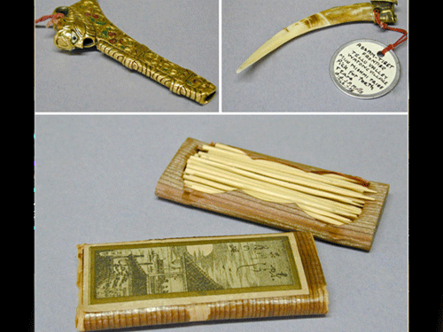

the toothpick
In the 17th century, toothpicks were luxury objects and like jewelry, were artfully stylized using precious metal and set with expensive stones. The first toothpick-manufacturing machine was developed in 1869, by Marc Signorello. Another was patented in 1872, by Silas Noble and J. P. Cooley.